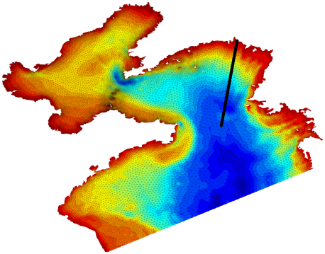
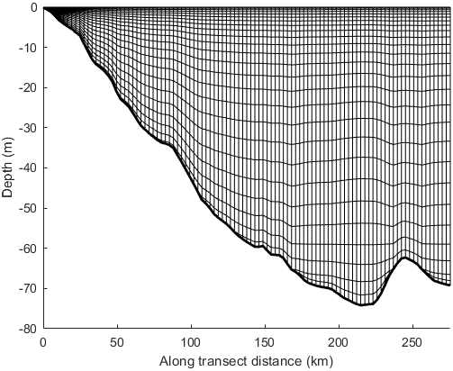

SCHISM-toolbox (v1.2-beta)
This is a MATLAB toolbox designed for the Semi-implicit Cross-scale Hydroscience Integrated System Model (SCHISM).
Last updated on 23 Apr 2025 by Wenfan Wu, CCRM, Virginia Institute of Marine Science.
üöÄ New features!!!
- Use structure arrays in IC/BC functions to allow variable-specific open boundaries and time series.
- Add functions for the serial/parallel extraction of open boundary or nudging data.
- Improve the efficiency of many file writing functions.
- Add SAL-related functions (self-attracting and loading tide).
More details can be found in the Changelog.md file.
üì¶ Dependencies
MATLAB Version: 2016b or newer
Official Add-Ons:
Image Processing Toolbox(required; drawpolygon, drawline)Mapping Toolbox(required; ispolycw, distance, projcrs, profwd)Parallel Computing Toolbox(optional; parfor)
Public packages:OceanMesh2D(optional)
Notes: OceanMesh2D is only required when using mesh2schism.m to load MAT files generated by OceanMesh2D.
üõ†Ô∏è Workflow
The following steps show a complete workflow to prepare input files with this toolbox. Refer to the first example (Exp1_BYS_main.m) in the toolbox for more details.
Step-1: Load the mesh grid
This part aims to load the mesh grid created by OceanMesh2D or SMS, and then all the grid info. will be stored in a datastruct named Mobj (see mesh_object.png).
{kind=link}
clc;clearvars
% options-1: load mesh grid from OceanMesh2D
% mesh_file = 'Exp1_BYS\inputs\BYS_20814.mat'; % NEED TO BE CHANGED
% option-2: load mesh grid from SMS
mesh_file = 'Exp1_BYS\inputs\BYS_20814.2dm'; % NEED TO BE CHANGED
Mobj = mesh2schism(mesh_file);
Mobj.expname = 'Exp1_BYS';
Mobj.time = (datetime(2020,6,1):hours(1):datetime(2020,6,10))';
Mobj.rundays = days(Mobj.time(end)-Mobj.time(1));
Mobj.dt = 150; % dt (secs), the same as in param.nml
Mobj.coord = 'geographic'; % geographic or Cartesian coordinateAll input files generated afterwards will be placed in the directory where the
mesh_fileis located;If your mesh grid is generated using software other than OceanMesh2D or SMS, use the read_schism_hgrid.m to create
Mobj. The rest of workflow is the same. See Exp3_CORIE_LSC2.m for more details.
Step-2: Activate modules
This part aims to select activated modules for your simulation.
Mobj = call_schism_tracers(Mobj);This is a purely hydrodynamic case and thus there are only two activated tracers (temp & salt).
Step-3: Horizontal grids
This part aims to visualize the horizontal grids and generate hgrid.gr3/hgrid.ll file.
figure('Color', 'w')
disp_schism_hgrid(Mobj, [1 0])
axis image
hold on
plot_schism_bnds(Mobj, [1 1 1], 'Color', 'k')
% write hgrid.gr3 and hgrid.ll files
write_schism_hgrid(Mobj)
Figure 1. Model domain.
Step-4: Check the grid quality
This part aims to check the inverse CFL constraints and hydrostatic assumption.
% check the inverse CFL constraints
check_schism_CFL(Mobj);
% check the hydrostatic assumption
check_schism_hydrostatic(Mobj);For more details about the grid quality, please refer to the SCHISM manual.

Figure 2. Check the inverse CFL constraints for horizontal grids.

Figure 3. The theoretical coarsest resolutions as a function of water depth.

Figure 4. The nodes that violate the hydrostatic assumption.
Step-5: Vertical grids
This part aims to generate the vertical grids (vgrid.in), and visualize vertical layers at the given transect.
% option-1: LSC2 coordinates
dep_edges = [10, 20, 30, 45, 55, 65, 75, 90];
dep_nums = [20 21 22 23 24 25 27 28];
Mobj = gen_schism_LSC2(Mobj, dep_edges, dep_nums, [4 5 3 5], 0.25);
% option-2: SZ coordinates
% s_consts = [10, 0.7, 5, 20];
% zcors = 20:2:(fix(max(Mobj.depth))+10);
% Mobj = gen_schism_SZ(Mobj, s_consts, zcors);
% check the quality of vertical grids
% draw a line on the map and press ENTER
figure('Color', 'w')
disp_schism_hgrid(Mobj, [1 0], 'EdgeAlpha', 0.05, 'LineWidth', 0.5);
auto_center
sect_info = def_schism_transect(Mobj, -1, 0.01);
% display the vertical layers on your selected transect
disp_schism_vgrid(Mobj, sect_info)
% Write the vgrid.in file.
write_schism_vgrid(Mobj, 'v5.10');Draw a line on the map and press ENTER, this part will visualize the vertical layers of selected transect.
The format of vgrid.in has changed since v5.10, and thus you need to specify the version number here (v5.10 or v5.9). v5.10 is the default.
def_schism_transect.m provides a variety of methods to define the transect (e.g., straight line, broken line, single points), see the usage of this function for more details.
 
Figure 5. (left) The selected transect; (right) vertical layers along the transect.
Step-6: River inputs
This part aims to add river inputs in the form of element sources (e.g., source.nc).
SS = def_schism_source(Mobj, [1 0], 'rebuild', 'on'); % select Yellow River Mouth here
river_info = match_rivers(SS.source.lonc, SS.source.latc, SS.source.elems);
varList = {'runoff', 'temp', 'salt'};
river_info = add_river_inputs(river_info, Mobj.time, varList, 'real_time');
D = prep_river_source(river_info, varList);
write_schism_source_nc(Mobj, D, varList)Left-click the points at the center of elements to select river sources (activate the datatips mode first), and press SHIFT to select multiple points simultaneously. The selected river sources will be saved as a MAT file named source_sink.mat.
Two things should be done before preparing your own application.
prepare your own example_river_data.mat file according to your needs.
add corresponding rivers in the match_rivers.m function.
If you want to add rivers in the form of open boundaries, please use the def_schism_obc.m function.
Step-7: Initial Conditions
This part aims to prepare the initial fields (e.g., elev.ic, temp.ic, ts.ic, and hotstart.nc).
% DS contains raw data in a standardized format:
% 1) 'Lon', 'Lat', and 'Depth' vectors must be in ascending order;
% 2) 'Depth' must be positive; ensure the 'Lon' and 'Lat' ranges fully cover your model domain;
% 3) variable matrix ('Data') must have dimensions of either [lon x lat] or [lon x lat x depth] above.
% option-1: real-time hycom data.
DS = prep_schism_init(Mobj, 'hycom_bys');
% option-2: monthly climatology hycom data.
% DS = prep_schism_init(Mobj, 'hycom_bys_clim');
% option-3: directly download real-time hycom data from the internet.
% DS = prep_schism_init(Mobj, 'hycom_online');
varList = {'ssh', 'temp', 'salt'}; % it can be changed if you only want to interpolate for partial variables.
InitCnd = interp_schism_init(Mobj, DS, varList);
% check the interpolation
check_schism_init(Mobj, DS, InitCnd, 'temp')
% option-1: horizontally varying but vertically uniform (temp.ic & salt.ic)
write_schism_ic(Mobj, 'elev', InitCnd(1).Data)
write_schism_ic(Mobj, 'temp', InitCnd(2).Data(1,:))
write_schism_ic(Mobj, 'salt', InitCnd(3).Data(2,:))
% option-2: vertically varying but horizontally uniform (ts.ic)
z_layers = 0:-3:-max(Mobj.depth);
temp_prof = 15+10*(1+tanh((z_layers+20)/10))/2;
salt_prof = 34-(1+tanh((z_layers+10)/7))/2;
write_schism_ic(Mobj, 'ts', [z_layers(:), temp_prof(:), salt_prof(:)])
% option-3: 3D inputs (hotstart.nc)
start_time = Mobj.time(1);
hst_data = write_schism_hotstart(Mobj, InitCnd, start_time);prep_schism_init.m is a simple wrapper function, so you can add more data sources in it as needed, just make sure the format of
DScomplies with the requirements above.get_hycom_online.m can be used to create the HYCOM database easily.

Figure 6. Check the surface and bottom temperature interpolation in the initial field.
Step-8: Boundary Conditions
This part aims to prepare the boundary inputs (e.g., elev2D.th.nc and TEM_3D.th.nc).
% Extract data for all open boundaries
obc_bnds = 1:Mobj.obc_counts;
% option-1: real-time boundary inputs from hycom.
DS = prep_schism_bdry(Mobj, 'hycom_bys', obc_bnds);
% option-2: monthly climatology boundary inputs from hycom.
% DS = prep_schism_bdry(Mobj, 'hycom_bys_clim', obc_bnds);
varList = {'ssh','temp','salt','uvel','vvel'};
bdry_time = Mobj.time(1)：Mobj.time(end); % daily inputs
BdryCnd = interp_schism_bdry(Mobj, DS, varList, bdry_time);
write_schism_th_nc(Mobj, 'elev2D', BdryCnd)
write_schism_th_nc(Mobj, 'TEM_3D', BdryCnd)
write_schism_th_nc(Mobj, 'SAL_3D', BdryCnd)
write_schism_th_nc(Mobj, 'uv3D', BdryCnd)
% check the temperature interpolation on the first day.
check_schism_bdry(Mobj, DS, BdryCnd, 'temp', Mobj.time(1))
% check the consistency between initial fields and boundary inputs.
check_schism_icbc(Mobj, 'temp', 1) % surface layerprep_schism_bdry.m is also a wrapper function. It integrates two general-purpose functions for handling HYCOM data: get_hycom_bdry and get_hycom_bdry_nc. These functions support both serial and parallel data extraction.
This step can be time-consuming when using high-resolution, real-time boundary inputs over long periods. The main bottleneck is I/O overhead from repeatedly loading data (only first time). Using an SSD and parallel processing can significantly speed up the process.
Both
obc_bndsandbdry_timecan be specified ascell, allowing different open boundaries or interpolation times to be assigned to each variable individually.

Figure 7. Check the temperature interpolation along the open boundary on the first day.
Figure 8. Check the consistency of SST in the initial condition (hotstart.nc) and boundary condition file (TEM_3D.th.nc).

Figure 9. SST at open boundary nodes in the initial condition (hotstart.nc) and boundary condition file (TEM_3D.th.nc).
Step-9: Tidal forcing
This part aims to implement tidal forcing at the specified open boundaries and generate bctides.in file. All open boundaries will be included by default.
% extract tidal forcing
tideList = {'S2','M2','N2','K2', 'K1','P1','O1','Q1'};
obc_bnds = 1:Mobj.obc_counts;
TideForc = get_fes2014_tide(Mobj, tideList, obc_bnds);
TideForc.cutoff_depth = 10;
TideForc.nf_temp = 0.8;
TideForc.nf_salt = 0.8;
bc_flags = [5 5 4 4];
write_schism_bctides(Mobj, TideForc, bc_flags)
% Add self-attracting and loading tide (optional)
SAL = get_fes2014_SAL(Mobj, tideList);
write_schism_SAL(Mobj, SAL)Download the fes2014 tidal products first, and change the directory in the functions get_fes2014_tide.m and get_fes2014_SAL.m.
It is easy to create another function if you want to change tide products, just make sure the returned
TideForchas the same format for the fields inside.
Step-10: Bottom friction
This part aims to prepare the input files related to bottom friction (e.g., drag.gr3).
% Type-1: roughness
z0 = 0.001; % set constant roughness in the model domain
write_schism_gr3(Mobj, 'rough', z0)
% Type-2: drag
Cd = calc_schism_bfric(Mobj, 1, [0.07 3], 'on');
write_schism_gr3(Mobj, 'drag', Cd)
% Type-3: manning
fmc = 0.025;
write_schism_gr3(Mobj, 'manning', fmc)Step-11: Misc. files ending in gr3
This part aims to generate the input files ending in gr3 (e.g., shapiro.gr3, albedo.gr3 and so on).
% shapiro.gr3
shapiro_val = calc_schism_shapiro(Mobj, [0.001, 0.05], 0.5, 'on');
write_schism_gr3(Mobj, 'shapiro', shapiro_val)
% windrot_geo2proj.gr3
write_schism_gr3(Mobj, 'windrot_geo2proj', 0)
% albedo.gr3
albedo_val = calc_schism_albedo(Mobj, 1, 'on');
write_schism_gr3(Mobj, 'albedo', albedo_val)
% watertype.gr3
wtypes = 5;
write_schism_gr3(Mobj, 'watertype', wtypes)
% diffmax.gr3 & diffmin.gr3
write_schism_gr3(Mobj, 'diffmax', 1)
write_schism_gr3(Mobj, 'diffmin', 1.0e-6)
% bdef.gr3
bdef_factor = zeros(size(Mobj.depth));
bdef_factor(Mobj.depth<5) = -2;
write_schism_gr3(Mobj, 'bdef', bdef_factor)
% hdif.gr3
hdif = calc_schism_hdif(Mobj, 0.25, 5e-5, 'on');
write_schism_gr3(Mobj, 'hdif', hdif)write_schism_gr3.m makes it easy to generate all the input files ending in 'gr3'.
Step-12: Misc. files ending in prop
This part aims to prepare input files ending in prop (e.g., tvd.prop).
% tvd.prop
tvd_flags = ones(Mobj.nElems, 1);
tvd_flags(Mobj.depthc<5) = 0;
write_schism_prop(Mobj, 'tvd', tvd_flags)
% fluxflag.prop (optional)
flux_flags = def_schism_fluxflag(Mobj, 2); % "2" means two separate regions
write_schism_prop(Mobj, 'fluxflag', flux_flags)write_schism_prop.m makes it easy to generate all the input files ending in 'prop'.
Step-13: Atmospheric forcing
This part aims to prepare sflux files (netcdf) as atmospheric forcing.
% AtmForc contains atmospheric forcing data with the following format:
% 1) 'lon' and 'lat' are matrices (nLons × nLats) generated by meshgrid, both in ascending order.
% 2) Variables are stored in matrices of size (nLons × nLats × nTimes).
% 3) The 'region' and 'time' fields must fully cover the model domain and simulation period.
Mobj.force_time = (datetime(2020,5,31):hours(1):datetime(2020,6,11))';
Mobj.force_region = Mobj.region;
time_steps = 30; % time steps in each netcdf file
src_file = 'schism-toolbox-v1.0-master\data\era5\ERA5_hourly_****_2020.nc'; % NEED TO BE CHANGED
AtmForc = get_era5_forcing(Mobj, 'prate', src_file);
write_schism_sflux(AtmForc, 'prc', time_steps)
AtmForc = get_era5_forcing(Mobj, {'dlwrf', 'dswrf'}, src_file);
write_schism_sflux(AtmForc, 'rad', time_steps)
AtmForc = get_era5_forcing(Mobj, {'spfh', 'uwind', 'vwind', 'prmsl', 'stmp'}, src_file);
write_schism_sflux(AtmForc, 'air', time_steps)Note that the
time_stepsof each sflux nc file can not exceed 1000 in the model. In addition, the 'hour' component ofbase_dateattribute is unused in each nc file.The variable
AtmForcwas generated using the function get_era5_forcing.m. If you intend to use a different atmospheric dataset, you must modify or replace this function accordingly. Ensure that the resultingAtmForcstrictly adheres to the format above.
Step-14: Boundary nudging (optional)
This part aims to prepare boundary nudging files (e.g., TEM/SAL_nu.nc).
% define boundary nudging zones (90-km width) for all open boundaries
% 20 km is the width of max-nudging zone adjacent to the boundary
obc_bnds = 1:Mobj.obc_counts; % all open boundaries
[nudge_factor, nudge_nodes] = calc_schism_nudge(Mobj, [20, 90, 4e-5], obc_bnds, 'on');
write_schism_gr3(Mobj, 'TEM_nudge', nudge_factor)
write_schism_gr3(Mobj, 'SAL_nudge', nudge_factor)
DS = get_hycom_nudge(Mobj, nudge_nodes); % support parallel extraction
nudge_time = Mobj.time(1):Mobj.time(end); % daily inputs
NdgCnd = interp_schism_bdry(Mobj, DS, {'temp', 'salt'}, nudge_time);
write_schism_nu_nc(Mobj, 'TEM', NdgCnd)
write_schism_nu_nc(Mobj, 'SAL', NdgCnd)Both
nudge_nodesandnudge_timecan be specified ascell, allowing different nudging nodes or interpolation times to be assigned to each variable individually.
üìå Notes
This toolbox was written referring to the fvcom-toolbox developed by Dr. Geoff Cowles et al.
üöß Limitations (To-do List)
- This toolbox is primarily used for preparing input files related to hydrodynamic part, other modules such as
CoSiNE,ICMare not fully supported. However, many interfaces have been reserved for future extension.
üìù Copyright
This toolbox is distributed under the Apache-2.0 license. It is free to use and no profit making is allowed.
If you encountered any problems/bugs when using this toolbox, or if you have any suggestions, please contact wwu@vims.edu. Any potential co-developers are highly welcome.